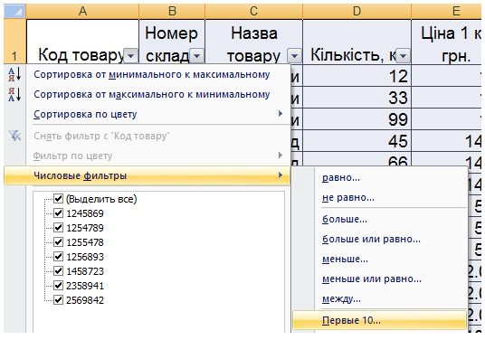
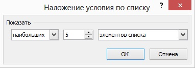
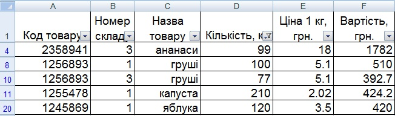
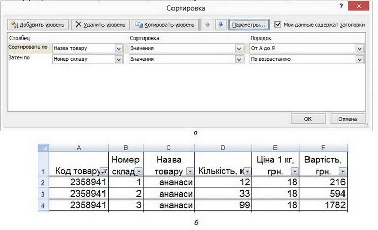
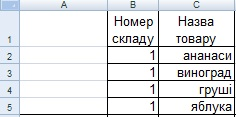
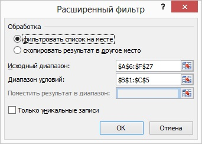
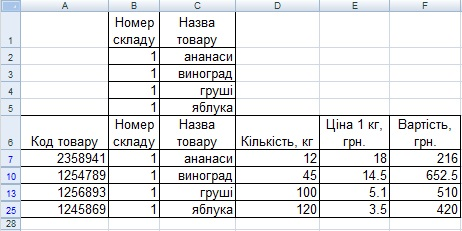

Вправа 5.2. Фільтрування даних
У цій вправі ви навчитеся впорядковувати та відбирати рядки в таблиці з інформацією про зберігання овочів та фруктів на різних складах. А саму, ви маєте відобразити:
- відомості про товари, яких на складах залишилось найбільше (5 найменувань);
- відомості про залишок товарів на складі №2, ціна за 1кг яких перевищує 6 грн;
- відомості про залишок фруктів на складі №1.
- Відкрийте файл Вправа_5_1.xlsx та збережіть його під іменем Відкрийте файл Вправа_5_2.xlsx.
- Виділіть клітинку з даними та виконайте команду Дані Підсумки. У вікні Проміжні підсумки клацніть кнопку Прибрати все, щоб видалити проміжні підсумки, обчислені у вправі 5.1. таблиця набуде такого вигляду, як показано на рис 5.30.
- Створіть дві копії першого аркуша, перетягуючи його ярлики за натиснутої клавіші Ctrl. Назвіть ці копії Аркуш2 та Аркуш3.
- Для відображення відомостей про товари, яких на складах залишилось найбільше (5 найменувань з найбільшим залишком), слід застосувати автофільтр.
- Виділіть клітинку з даними на першому аркуші та виконайте команду Дані Фільтр Автофільтр.
- Клацніть кнопку в клітинці поля Кількість, кг та виберіть зі списку, що відкриється, умову фільтрації (Перші 10…) (рис. 5.34). У результаті відкриється вже відоме вам вікно Автофільтр для добору найкращої десятки.
- Вкажіть в розкривних списках 5 найбільших елементів списку (рис. 5.35).
- У результаті аркуш електронної таблиці міститиме відомості про п’яти найменувань, яких на складах залишилось найбільше (рис. 5.36).

Рис. 5.34. Список умов фільтрації
Рис. 5.35. Критерій для відбору п’яти найбільших елементів
Рис. 5.36. Таблиця, що містить відомості про товари, яких на складах залишилось найбільше - Для отримання відомостей про залишок товарів на складі 2, ціна на 1 кг яких перевищує 6 грн, також можна застосувати автофільтр, оскільки тут умова фільтрації складається з двох частин, з’єднаних сполучником «і» : «склад має номер 2 і ціна перевищує 6 грн».
- Перейдіть на Аркуш2, виділіть клітинку з даними та виконайте команду Дані Фільтр Автофільтр.
- Клацніть кнопку у клітинці поля Номер складу і виберіть зі списку умов фільтрації значення 2.
- Зі списку умов фільтрації поля Ціна 1 кг, грн виберіть пункт (Умова), вкажіть у списку вікна, що відкриється, умов відбору – більше 6 та клацніть кнопку ОК (рис. 5.37).

Рис. 5.37. Отримання відомостей про залишок товарів на складі 2, ціна за 1 кг яких перевищує 6 грн: а – вікно Користувацький автофільтр; б – знайдені відомості - Серед наявних у таблиці товарів фрукти – це ананаси, виноград, груші та яблука. Тому умову «фрукти на складі 1» можна формалізувати так: «номер складу дорівнює 1 і назва товару - це ананаси, або виноград, або груші, або яблука». Отже, на значення параметра «назва параметру» накладено умову, що складається більше ніж із двох частин, і тому потрібно застосувати розширений фільтр.
- Перейдіть на Аркуш2, виділіть клітинку з даними та виконайте команду Дані Фільтр Автофільтр.
- Додайте п’ять рядків над першим рядком таблиці, створіть у порожніх клітинках (В1:С5) критерій для відбору для розширеного фільтра (рис. 5.38).
- Bиконайте команду Дані Фільтр Розширений фільтр, заповніть поля вікна Розширений фільтр (рис. 5.39), клацніть кнопку ОК, і ви отримаєте потрібні відомості (рис. 5.40). Збережіть електронну книгу.

Рис. 5.38. Критерій відбору відомостей про фрукти на складі 1

Рис. 5.39. Створення розширеного фільтра
Рис. 5.39. Створення розширеного фільтра

Рис. 5.40. Таблиця, що містить інформацію про фрукти, наявні на складі 1
Рис. 5.40. Таблиця, що містить інформацію про фрукти, наявні на складі 1